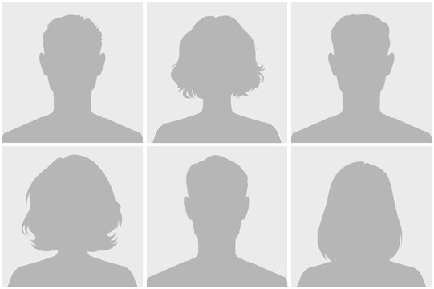

OM OSS
Vi er en gruppe IT- og informasjonssystemstudenter ved Universitetet i Agder som kombinerer teknisk utvikling, brukerforståelse og praktisk problemløsning. Som gruppe er vi opptatt av å jobbe strukturert, fordele ansvar tydelig og bruke ulike styrker til å bygge løsninger som faktisk kan brukes.
Prosjektet vårt passer godt som et praksisnært digitaliseringsprosjekt, gjerne i samarbeid med en bedrift, offentlig aktør eller organisasjon som trenger en mer effektiv digital løsning. Ambisjonsnivået vårt er å levere mer enn bare en prototype: Vi ønsker å lage noe gjennomarbeidet, ryddig dokumentert og relevant nok til at det kan videreutvikles etter prosjektperioden.